Three arenas — digital footprint, work choices, where you live.
Six mic-drills. B2 vocabulary drilled to reflex speed. One voice that lands the score on either exam.
Two very different beasts — one 4-minute Interview, one 11-minute conversation. Same voice wins both if it's confident and specific.
01 · route
Know the route before you start
One button, four steps: WHY the exam works like this → ROOMS where you actually speak → WORDS you collected → FINAL send. A clear route reduces hesitation and wasted clicks.
TOEFL iBT · new 2026
Two tasks. Total ~4 minutes.
Task 1 · Listen & Repeat — you hear a short sentence, repeat it verbatim. Rewards clean pronunciation and intonation.
Task 2 · Interview — a virtual interviewer asks 3–4 questions on a familiar topic. You answer in full sentences, ~45 s each.
Scored 1.0 – 6.0 (replaced the old 0–30 scale in Jan 2026).
What we practise: quick topic-anchored answers, no filler, one specific example per point.
IELTS Speaking · unchanged
Three parts. Total ~11–14 minutes.
Part 1 · Interview — familiar topics (home, hobbies, tech). 4–5 minutes of quick Q&A.
Part 2 · Long turn — cue card + 1-minute prep + 2-minute monologue.
Part 3 · Discussion — abstract follow-ups on the Part 2 theme. 4–5 minutes.
What we practise: extending answers, sentence stems, connector chains for Part 3.
02 · rooms
Three rooms · six mic-drills · one voice
Each room = vocab flip · reading · prompt library · guided mic · debate · freer mic. Switch rooms whenever — progress is saved.
Room 1 · TOEFL Interview / IELTS Part 1 · Part 3
Digital Footprint — what the internet knows about you
Social media, privacy trade-offs, AI training data, the version of you a stranger meets before you do.
Freshest exam vocab of 2026 — 12 core words drilled to reflex speed, then six exam prompts, then your mic.
Choose what to share
The feed remembers
Speak it, don't type it
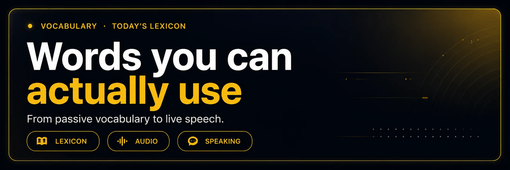
a · vocab flip
12 B2 words — tap to flip, 🔊 to hear, ＋ to save
Front = English + part of speech. Tap → Russian + a natural example. Speaker button reads aloud (native voice).
curate
v
tap → RU
кураторски отбирать
"I curate what people see about me online."
blur
v
tap → RU
размывать / скрывать
"Most people blur their kids' faces in photos now."
breach
n
tap → RU
взлом данных
"A data breach exposed 20 million users last month."
opt out
phr v
tap → RU
отказаться от участия
"You can opt out of ad tracking in the settings."
surveillance
n
tap → RU
слежка / наблюдение
"Constant surveillance feels normal now, and that's the problem."
digital footprint
n
tap → RU
цифровой след
"Your digital footprint is basically a résumé you didn't write."
shadow ban
n
tap → RU
теневой бан
"He thinks he was shadow banned — his views dropped to zero overnight."
algorithm
n
tap → RU
алгоритм ленты
"The algorithm decides what you see before you do."
go viral
phr v
tap → RU
стать вирусным
"Her video went viral for the wrong reasons."
anonymity
n
tap → RU
анонимность
"True anonymity online is almost a myth by now."
consent
n
tap → RU
осознанное согласие
"They trained the model on my posts — without my consent."
leak
n / v
tap → RU
утечка данных
"An internal leak revealed how the app tracks users at night."
b · reading
90-second read — meets 9 of the 12 target words
Hover any dashed word for the Russian gloss. Read out loud once before continuing.
Everyone leaves a digital footprint, whether they mean to or not.
You post a photo, tag a friend, click a survey — an
algorithm quietly builds a version of you the world can query. Sometimes
that version goes viral and rewrites your career. Sometimes
it leaks in a data breach and rewrites your day.
The B2-level move is to curate instead of censor:
keep the story yours, but blur the parts you never signed up to share.
Opt out of ad tracking. Read the box before you tick
consent. Assume that
anonymity is a preference, not a promise —
and speak about your online life the way you'd want your employer to read it back to you.
c · prompt library
6 exam prompts · with sentence stems
Read each prompt out loud. Use the stem as your first breath — it stops you fishing for a start.
TOEFL Interview
How much of your daily life do you share online?
Start: "Honestly, less than I used to — mostly because…"
TOEFL Interview
What is the biggest risk of having a large digital footprint?
Start: "The biggest risk, I think, is a data breach because…"
IELTS Part 1
Do you use social media a lot?
Start: "It depends on the platform. On X, I mostly…"
IELTS Part 1
How often do you check your privacy settings?
Start: "Every couple of months — usually when I see a story about a leak…"
IELTS Part 3
Why do people share so much personal information online?
Start: "There are two forces at play — one is validation, the other is convenience…"
IELTS Part 3
Should governments regulate what tech companies do with our data?
Start: "To a point — the trade-off is between innovation and…"
d · 🎤 mic-drill · guided
3 short prompts · ~45 s each · vocab hits scored live
Tap the mic, speak your answer, watch the transcript. Target words highlight in green as you say them.
Prompt 1 of 3
In one sentence, describe your digital footprint.
Target words to hit: digital footprint · algorithm · consent · leak · opt out
0:45
Tap mic → speak → tap again to stop
Your transcript will appear here…
Hits: 0 / 5Time used: 0.0 s
Prompt 2 of 3
Name three things you never share online, and explain why.
Target words to hit: anonymity · surveillance · curate · breach · shadow ban
0:45
Tap mic → speak → tap again to stop
Your transcript will appear here…
Hits: 0 / 5Time used: 0.0 s
Prompt 3 of 3
How would you react if a company leaked your personal data tomorrow?
Target words to hit: leak · consent · breach · go viral · blur
0:45
Tap mic → speak → tap again to stop
Your transcript will appear here…
Hits: 0 / 5Time used: 0.0 s
🎯 d1 · TOEFL Task 1 · Listen and Repeat
Say each sentence exactly as you hear it · verbatim · scored / 7
TTS plays the target sentence. Tap the mic and repeat verbatim. Every target word you miss subtracts a point. Rewards clean pronunciation + intonation.
Your digital footprint follows you long after you log off.
00:00
Mic-match: 0 / 7
A single leak can change how strangers see you forever.
00:00
Mic-match: 0 / 7
Most algorithms decide what you see before you do.
00:00
Mic-match: 0 / 7
Opting out of tracking is easier than you might think.
00:00
Mic-match: 0 / 7
Strategy: don't speed up. Don't drop articles (a, the). Keep sentence stress heavy on content words.
A simulated interview format — 4 questions on personal experience, opinion, and reasoning. Read the setup, click ▶ on each question to hear it, jot notes in the box, and speak your answer.
"You've agreed to take part in a research study on how people share online. The researcher will ask you four short questions. Answer as fully and honestly as you can. Each answer should be about 45 seconds."
Q1 · personal experience
Think back to a time when you shared something online that you later regretted. What was it? How did you feel when you realised?
Q2 · self-reflection
Some people carefully curate what they post; others share almost everything without thinking. Which are you closer to, and why?
Q3 · opinion
Do you think being anonymous online is a right, a privilege, or a problem? Give one concrete reason from your own life or something you've seen.
Q4 · policy opinion
Some researchers argue that governments should require platforms to let users see everything they've collected about them. Do you agree? Why or why not?
Target: ~45 sec per answer · 4 short paragraphs · position + 1 example eachwords: 0
Q1. The time I really regretted was a screenshot I shared in a group chat last year — I thought I was making a joke about a colleague's slide deck, and someone forwarded it back to her. She didn't say anything, but the whole meeting after that felt different. I remember checking my phone every ten seconds. What made it worse was that the joke wasn't even funny — I curated a mean version of a person for a two-second laugh.
Q2. I'm closer to the curator. Not because I'm careful — because I'm tired. I spent my early twenties oversharing, and I saw how much of my mood was tied to who reacted to what. Now I ask: would this photo add anything to someone's day, or is it just noise? If it's noise, I don't post it.
Q3. Honestly, I think anonymity is a right that becomes a problem when it's misused. On one hand, people need spaces where they can ask embarrassing questions or share hard experiences — that's civic value. On the other, the same anonymity lets people be cruel with no cost. My concrete example: I know a small forum where anonymous users mentored me through learning Python, and I know a subreddit where anonymous users piled on a teenager for a haircut. Same mechanic, opposite outcomes.
Q4. Yes, cautiously. I do think we should be able to see what platforms have collected — a "download your data" that actually explains what the data means. But I don't think governments should hand-hold companies through it — regulate the disclosure standard, then let market pressure force clarity. The trade-off is that heavier regulation slows product cycles, and honestly, that's fine. It's our data.
Tutor score: — / 4
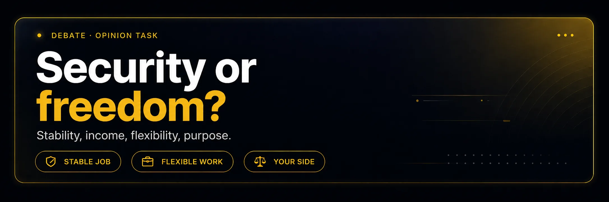
e · debate builder
"Should we regulate what companies do with our data?"
Build both sides first, then pick one. The point is to sound like you've heard the opposite view — that's what IELTS Part 3 rewards.
Pro · regulate
Companies collect data without meaningful consent.
A single breach can affect millions of people.
Users can't audit what an algorithm does with their footprint.
Regulation forces basic transparency — like a food label.
Con · lighter touch
Heavy rules slow useful innovation.
Users can already opt out of most tracking.
Enforcement often lags the tech by years.
A stricter EU-style law might just push companies elsewhere.
Connectors that carry a Part 3 answer
On the one hand…Granted, X, but still…The flip side is…To a point — however…That said…The trade-off there is…
Skeleton only — never memorise. Fill blanks with YOUR real detail.
On the one hand, regulation matters because ___ your reason ___.
Granted, stricter rules can slow ___ what exactly ___,
but still, the trade-off between innovation and consent tilts, for me, toward
___ your side ___. A recent example is ___ one specific story ___ —
without that regulation, we'd be reading the same headline every six months.
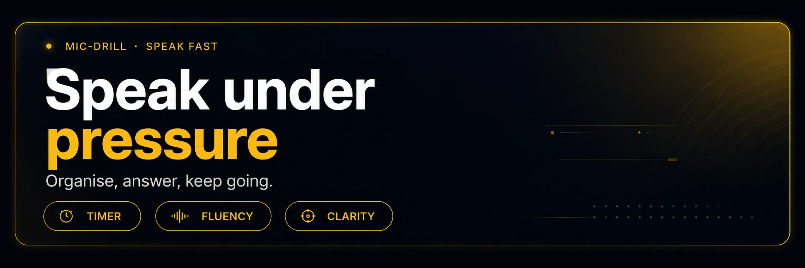
e2 · watch · 2:28
Amazing "mind reader" · what your digital footprint actually leaks
A street-magic setup that isn't magic. Every "impossible" answer comes from a team backstage googling the same person you just met — same tools any stranger has. Watch once for the trick, once for the vocab.
Watch for: the moment his "psychic" facts flip from creepy to boring — the second you realise it was all public info. That flip is what a digital footprint feels like from the outside.
Which private detail felt most exposed to you — and why?
Name three sources the "mind reader" probably used to build his script.
Would you have opted out of one thing on your public profile after seeing this?
f1 · 🎤 mic-drill · cue card
IELTS Part 2 cue-card Level 1 · warm-up
Softer entry — shorter card, 30-second prep, ~1 minute speaking. Use it before the Level 2 card to warm the voice up.
IELTS Part 2 · Level 1 · warm-up
Describe an app or website you check every single day.
What it is and when you started using it
What you actually do there (scroll, post, search, message)
How much of your day it takes
Why you keep coming back to it
Prep: 30 seconds. Speak: ~1 minute. Don't try to sound clever — try to sound clear.
AI Live Coach · warm-up · predicted /8
Tap Start recording and speak for about a minute. Checklist below lights up as you cover each hook.
⚠️ Live speech recognition is not supported here. Open in Chrome or Edge on desktop. You can still type your answer below.
Teacher-mirror code----offline
Criteria checklist · real-time
✓App / site namedInstagram / TikTok / YouTube / X / Telegram+1
✓When you startedyears ago / since school / during lockdown+1
✓What you do therescroll / post / message / search / share+1
✓Time spenthours / minutes / most of / half of my+1
✓Why you come backbecause / it helps / I like / addictive+1
✓How it makes you feelbored / relaxed / anxious / connected+1
✓Wrap-upoverall / to be honest / in general / so+1
Press Start and speak for about a minute. Cover all six ticks and you're at 7+.
Mic doesn't work? Type your answer instead
f2 · 🎤 mic-drill · freer
IELTS Part 2 cue-card Level 2 · full 2 min
Read the cue card. Take one minute of quiet prep (don't write full sentences — 5 bullet notes maximum). Then tap the mic and go for two minutes without stopping.
IELTS Part 2 · Level 2 · cue card
Describe a time you regretted something you shared online.
What it was and when you shared it
Who saw it (and who wasn't supposed to)
How the situation played out over the next few days
Explain why you regretted it, and what you'd do differently now
AI Live Coach · record + real-time criteria + predicted /10
Tap Start recording and speak for two minutes. Criteria light up in real time — score is predicted live from what the transcript detects. Nothing leaves your browser (unless you share the teacher-mirror code below).
⚠️ Live speech recognition is not supported here. Open in Chrome or Edge on desktop. You can still type your answer below.
Teacher-mirror code----offline
Criteria checklist · real-time
✓Topic namedonline / social / digital / share+1
✓What was sharedphoto / post / video / tweet+1
✓When it happenedlast week / months ago / at that time+1
✓What happened nextreaction / went viral / blocked / DM+1
✓Why you regretted itbecause / made me feel / looking back+1
✓What you'd do differentlynow / these days / from then on+1
✓Conclusionoverall / to sum up / in the end+1
--:--tap to start · 2:00 max
Words0
Pace · wpm--
Linkers0
B2+ vocab0
Longest pause · s0
Predicted score
—/ 10
Press Start and speak the cue-card answer aloud. Don't stop for 2 minutes.
Mic doesn't work? Type your answer instead
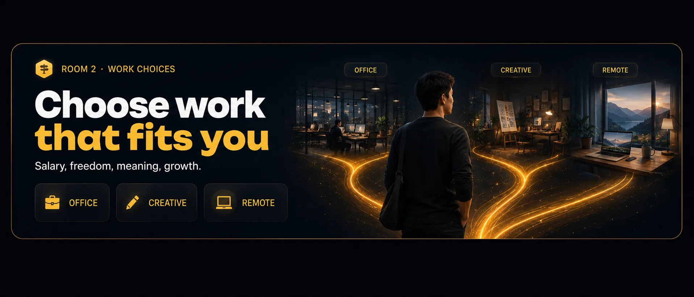
Room 2 · TOEFL Interview / IELTS Part 1 · Part 3
Work I'd Actually Take — hours, pay, remote, meaning
The evergreen three-way question: higher pay vs shorter hours vs remote freedom.
Both exams love it because there's no right answer — only a defended one. Twelve B2 words, one clear defence.
Every job = trade-off
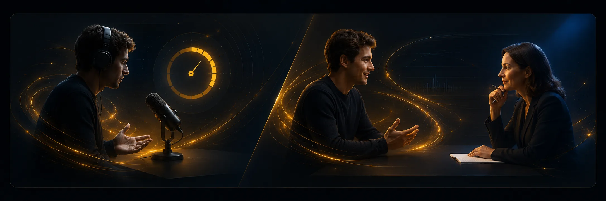
Practice the answer
Speak it into the mic
a · vocab flip
12 B2 words — the work-life vocabulary examiners actually recognise
Same mechanic: tap → RU + example. 🔊 for the native pronunciation. ＋ to save to your lexicon.
overtime
n
tap → RU
сверхурочные
"I said no to overtime for three months and my life came back."
flexible hours
n
tap → RU
гибкий график
"Flexible hours matter more to me than a bigger salary."
burnout
n
tap → RU
выгорание
"Half of my classmates hit burnout by their second year."
commute
n / v
tap → RU
дорога до работы
"A ninety-minute commute is a tax you pay every single day."
perks
n pl
tap → RU
приятные бонусы
"Free lunch is a perk, not a reason to stay."
take-home
adj / n
tap → RU
на руки после налогов
"The take-home is what matters, not the sticker salary."
workload
n
tap → RU
рабочая нагрузка
"My workload doubled overnight and no one asked me first."
deadline
n
tap → RU
крайний срок
"A tight deadline focuses the mind — a moving one drains it."
autonomy
n
tap → RU
самостоятельность
"I would trade ten percent of my salary for real autonomy."
benefits
n pl
tap → RU
соцпакет
"The benefits package is genuinely the best part of this job."
notice period
n
tap → RU
срок предупреждения
"A three-month notice period gives you room to breathe when you quit."
trade-off
n
tap → RU
компромисс, размен
"Every good job is a trade-off — the question is which one you can live with."
b · reading
90 seconds on the modern work-week
Read once silently, then out loud. Hover any dashed word for a nudge.
Ten years ago the dream job meant a big salary, a corner office, and as much
overtime as you could stomach.
Today the offer letter that impresses a B2 candidate reads differently:
reasonable workload,
a movable deadline,
real autonomy,
flexible hours, and a
commute under thirty minutes.
The B2-level answer to a work question isn't "I want the highest pay". It's
"Here's my trade-off."
Perhaps you'd take a smaller take-home
for a shorter notice period and less risk of
burnout. Perhaps the
perks matter less than the boss you'd report to.
Examiners hear a hundred "I want money" answers a week; the "here's my trade-off"
answer wins because it sounds like a grown-up who has actually thought about it.
c · prompt library
6 exam prompts · with sentence stems
Notice how the stems commit to a position within the first six words. That's what buys you the rest of the answer.
TOEFL Interview
Would you rather earn more or work less?
Start: "Between the two, I'd take less pay for shorter hours — because…"
TOEFL Interview
What is a job you would never take, even for a high salary?
Start: "There's one line for me — anything that guarantees weekly overtime…"
IELTS Part 1
Do you prefer working in a team or alone?
Start: "It depends on the task. For creative work, I lean towards…"
IELTS Part 1
How important is a short commute to you?
Start: "Honestly, it's one of my top three factors — because…"
IELTS Part 3
Why do so many people burn out at modern jobs?
Start: "There are two forces — one is workload creep, the other is…"
IELTS Part 3
Should companies be required to offer flexible hours?
Start: "To a point — the trade-off between fairness and operational cost is…"
d · 🎤 mic-drill · guided
3 quick defences · 45 s each · target vocab scored live
Same rhythm as Room 1 — tap the mic, defend your pick, watch the target words highlight.
Prompt 1 of 3
Pick one — higher pay OR shorter hours — and defend it in 45 s.
Target words to hit: trade-off · take-home · overtime · burnout · autonomy
0:45
Tap mic → speak → tap again to stop
Your transcript will appear here…
Hits: 0 / 5Time used: 0.0 s
Prompt 2 of 3
Describe your ideal work-week — hours, place, rhythm.
Target words to hit: flexible hours · commute · workload · deadline · perks
0:45
Tap mic → speak → tap again to stop
Your transcript will appear here…
Hits: 0 / 5Time used: 0.0 s
Prompt 3 of 3
You are offered a great job with only two weeks notice period. Take it or negotiate?
Target words to hit: notice period · benefits · burnout · workload · take-home
0:45
Tap mic → speak → tap again to stop
Your transcript will appear here…
Hits: 0 / 5Time used: 0.0 s
🎯 w1 · TOEFL Task 1 · Listen and Repeat · 7 items
Hear it once. Repeat it verbatim. The text is hidden — that's the whole point.
Real TOEFL 2026 format: static context picture, sentence read once, no text on screen. Items get longer — 5–7 words at first, 15–18 words by the end. AI scores memory, pronunciation, rhythm, intonation, fluency.
Context: you are the candidate in a work interview. Every sentence you hear is something a real interviewer or colleague could say.
1 · warm-up · 5 words
Flexible hours mean better sleep.
00:00
Mic-match: 0 / 7
2 · warm-up · 6 words
A tight deadline focuses the mind.
00:00
Mic-match: 0 / 7
3 · short · 7 words
Every good job is a real trade-off.
00:00
Mic-match: 0 / 7
4 · medium · 10 words
Burnout is easier to prevent than to recover from.
00:00
Mic-match: 0 / 7
5 · medium · 12 words
Autonomy at work matters more than a bigger take-home pay check.
00:00
Mic-match: 0 / 7
6 · long · 17 words
A ninety-minute commute is a tax you pay every single day, whether you notice it or not.
00:00
Mic-match: 0 / 7
7 · long · 18 words · TOEFL peak
Candidates who quietly negotiate flexible hours before signing rarely regret the deal a year later, whatever the salary was.
00:00
Mic-match: 0 / 7
Memory strategy for long items (6-7):
Chunk by clause: "candidates who quietly negotiate flexible hours" · "before signing" · "rarely regret the deal a year later" · "whatever the salary was".
Hold the intonation, not the words. If you catch the melody, the words follow.
Don't rush the first three words. The whole sentence sits on top of them.
Don't drop articles (a, the) — the AI scores every one.
A simulated interview format — 4 questions on personal work priorities, opinion, and reasoning. Click ▶ on each question to hear it, jot notes in the box, and speak your answer.
"You've agreed to a short interview about how you think about work. The researcher will ask you four questions on money, hours, and trade-offs. Answer as fully and honestly as you can. Each answer should be about 45 seconds."
Q1 · personal experience
Think of a job — real or imagined — where the pay was great but the hours or workload were brutal. Would you take it now? What would change your mind?
Q2 · self-reflection
Some people optimise their career for take-home pay; others for autonomy and flexible hours. Which are you closer to, and why?
Q3 · opinion
Do you think a long commute is a fair price for a better-paid job? Give one concrete reason from your own life or someone you know.
Q4 · policy opinion
Some governments now cap the standard working week at 35 hours. Do you think that's fair to workers, to employers, or to the economy overall?
Target: ~45 sec per answer · 4 short paragraphs · position + 1 example eachwords: 0
Q1. Honestly, five years ago I'd have said yes to the brutal-hours job without blinking — the take-home would've bought me freedom later, or so I thought. Now I'd walk away. What changed my mind was watching two friends hit real burnout on that exact trade. Neither of them "won" the runway they were chasing — they just spent it on recovery. So the question stopped being "how much" and became "for how long, and at what cost".
Q2. I'm closer to the autonomy camp — but not because I don't care about money. I care about it a lot. What I've realised is that autonomy compounds. Flexible hours mean I sleep enough, which means I make better decisions, which means my take-home actually grows over ten years, not just this quarter. Optimising for pay alone is a one-year game. Optimising for autonomy is a decade game.
Q3. A long commute can be a fair price — but only if you know what you're paying for. My cousin took a job an hour and a half each way for double the salary. On paper, brilliant. In reality, three hours a day meant no gym, no cooking, and a slow drift into resentment. He lasted eleven months. So the fair price test is: does the money buy back the time the commute steals? If not, the maths only works in a spreadsheet.
Q4. I'd support a 35-hour cap cautiously — as a floor, not a ceiling. It protects the workers who don't have the leverage to say no to overtime, and it forces companies to actually plan workload instead of squeezing bodies. The trade-off is that some industries — hospitals, startups, seasonal work — genuinely need surge weeks. So I'd support the cap with a clear opt-in for paid overtime, tracked and transparent. The point isn't fewer hours — it's honest hours.
Tutor score: — / 4
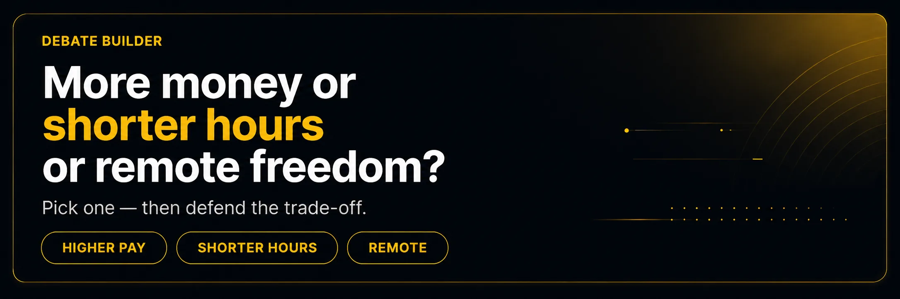
e · debate builder
"More money vs shorter hours vs remote freedom — pick one"
All three are defensible. What loses points is picking one and forgetting the others exist.
Pro · higher pay
Bigger take-home compounds fast — savings, a mortgage, a runway.
Money buys the perks other people negotiate for (a shorter commute, a cleaner flat, quieter mornings).
Career capital is a snowball — early over-paid years fund calmer later ones.
Ambitious workload can be a training ground, not just a trap.
Pro · shorter hours / remote
No salary undoes burnout once it hits.
Time buys real autonomy — hobbies, health, relationships.
Remote work usually adds two hours back to the day (no commute).
The "perks" that matter most cost nothing — sleep, quiet, choice.
Connectors that show you've weighed both sides
Between the two, I'd take…The trade-off there is…Granted, X, but still…If you factor in Y…On balance…The catch is…
Skeleton only — never invent a job you don't have. Fill blanks with YOUR real angle.
Between the two, I'd take ___ your choice ___,
and here's my reasoning. The obvious upside of the other option is
___ concede one point ___. Granted — but the trade-off
that clinches it for me is ___ your key factor ___.
For example, in my last ___ real experience ___,
I noticed that ___ what happened ___, and that pattern
would only get worse under the alternative.
f · 🎤 mic-drill · freer
IELTS Part 2 cue-card · 1 min prep · 2 min speaking
One minute prep — write five bullet notes, no full sentences. Then speak for two minutes.
IELTS Part 2 · cue card
Describe a job you would love to have one day.
What it involves day to day
What skills or training it needs
Why the job appeals to you specifically (not everyone)
Explain how the job would change your life and what trade-off you'd accept
AI Live Coach · record + real-time criteria + predicted /10
Tap Start recording and describe the job you'd love to have. Criteria light up live. Concrete detail scores higher than abstract wishing.
⚠️ Live speech recognition is not supported here. Open in Chrome or Edge on desktop.
Teacher-mirror code----offline
Criteria checklist · real-time
✓Job namedthe job / role / position+1
✓Day-to-day tasksinvolves / typical day / meetings+1
✓Skills or training neededskill / degree / experience+1
✓Why it appeals to YOUappeals to me / drawn to / passionate+1
✓How it changes your lifebalance / freedom / would give me+1
✓Trade-off you'd acceptgive up / sacrifice / the price+1
✓Realistic tonehonestly / granted / not overnight+1
✓Conclusionoverall / worth it / to sum up+1
--:--tap to start · 2:00 max
Words0
Pace · wpm--
Linkers0
B2+ vocab0
Longest pause · s0
Predicted score
—/ 10
Press Start and describe your dream job aloud. Don't stop for 2 minutes.
Mic doesn't work? Type your answer instead
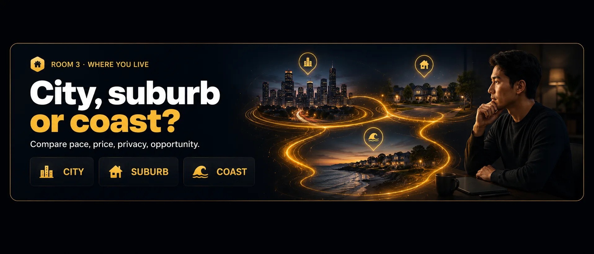
Room 3 · IELTS Part 1 · Part 2 · Part 3 (and TOEFL Interview)
Where I Live vs Where I'd Live — the city, the town, and the version you'd pick
Home is the highest-frequency IELTS Part 1 topic in the world. Push it further
and you're straight into Part 3 abstract on urbanisation. Twelve words, one clean compare-frame.
Which one is yours?
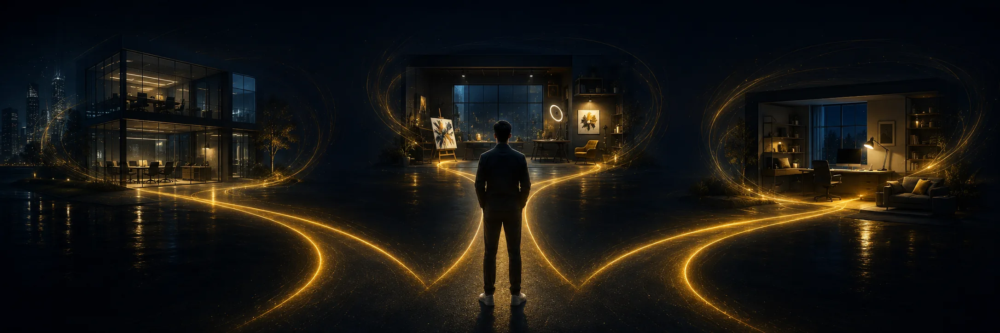
Three versions of home
Say your version
a · vocab flip
12 B2 words — the place-lexis examiners love hearing at B2
Same mechanic. These are the words that push a Part 1 answer from "fine" to "band 7".
neighbourhood
n
tap → RU
район, окрестности
"My neighbourhood is quiet on weekdays and unrecognisable on weekends."
cost of living
n
tap → RU
стоимость жизни
"The cost of living jumped almost thirty percent in three years here."
nightlife
n
tap → RU
ночная жизнь
"Honestly, I'm past the age where nightlife is a selling point."
green space
n
tap → RU
зелёная зона
"Any city that puts green space five minutes from every flat gets my vote."
sprawl
n / v
tap → RU
разрастание города
"Urban sprawl is basically the map catching up with the traffic."
affordable
adj
tap → RU
по карману
"Affordable rent is the top three factor for anyone moving here."
overcrowded
adj
tap → RU
переполненный
"The trains here are overcrowded four days out of five."
pace of life
n
tap → RU
темп жизни
"I moved for the pace of life — the salary was the second reason, not the first."
amenities
n pl
tap → RU
удобства, инфраструктура
"There's a strange comfort in having every amenity within a ten-minute walk."
high-rise
n / adj
tap → RU
многоэтажка
"I grew up in a high-rise flat and, to be honest, I liked it."
walkable
adj
tap → RU
пешеходный, удобный для ходьбы
"A walkable city changes the shape of your day — I never realised it until I lived in one."
noise pollution
n
tap → RU
шумовое загрязнение
"Noise pollution is the invisible cost of every downtown flat."
b · reading
90 seconds on the shape of a modern city
Read silently, then out loud. Hover any dashed word for the Russian gloss.
Ask ten people why they moved to a city and you'll get ten answers.
Some came for nightlife and stayed for the
amenities.
Some came for jobs and stayed because their neighbourhood
quietly became a home. The place doesn't just have to be
affordable — it has to be
walkable, with enough
green space to remind you that a city was once a forest.
The B2-level insight is that no city is only good or only bad.
The cost of living creeps up,
the trains get overcrowded,
the traffic sprawls outward,
noise pollution becomes a bass line under everything.
But then a high-rise flat with a real view can also feel
like winning the sky. The best answer isn't "cities are better" or "the countryside is calmer".
It's "here's my pace of life, and here's the version of a place that fits it".
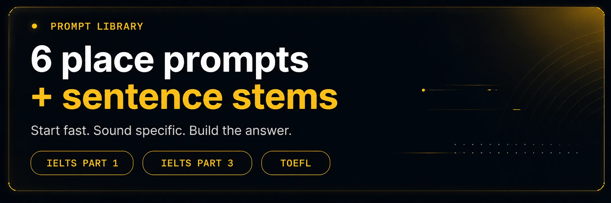
c · prompt library
6 exam prompts · with sentence stems
Part 1 wants your first sentence to feel casual and specific. Part 3 wants your first sentence to feel structured. Stems below do both.
IELTS Part 1
Where do you live now?
Start: "I live in a mostly residential neighbourhood on the edge of…"
IELTS Part 1
What do you like most about your neighbourhood?
Start: "Probably the fact that it's walkable — most things I need are…"
IELTS Part 1
Would you like to move somewhere else in the future?
Start: "Ideally yes, but only if the pace of life…"
IELTS Part 3
Why do so many people move to big cities?
Start: "There are two pull factors — one economic, one social…"
IELTS Part 3
Do city and country lifestyles offer equal advantages?
Start: "On balance, they're not equal, but they solve different problems…"
TOEFL Interview
Describe the place you'd choose to live for the next ten years.
Start: "A mid-sized city — big enough for amenities, small enough to walk…"
d · 🎤 mic-drill · guided
3 fast Part 1 style prompts · 45 s each · target vocab scored live
Part 1 questions look easy — that's the trap. Aim for one specific detail per sentence, not two.
Prompt 1 of 3
Describe the street you live on. Concrete details, no generalities.
Target words to hit: neighbourhood · walkable · amenities · green space · high-rise
0:45
Tap mic → speak → tap again to stop
Your transcript will appear here…
Hits: 0 / 5Time used: 0.0 s
Prompt 2 of 3
Compare a city you know well to your hometown. What trade-offs jump out?
Target words to hit: pace of life · cost of living · affordable · overcrowded · nightlife
0:45
Tap mic → speak → tap again to stop
Your transcript will appear here…
Hits: 0 / 5Time used: 0.0 s
Prompt 3 of 3
Name three things that make a place worth living in — and one thing that ruins it.
Target words to hit: green space · walkable · amenities · noise pollution · sprawl
0:45
Tap mic → speak → tap again to stop
Your transcript will appear here…
Hits: 0 / 5Time used: 0.0 s
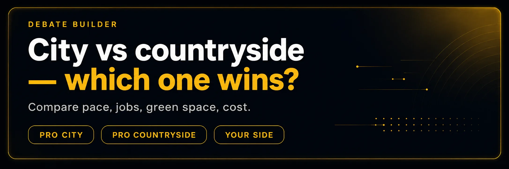
e · debate builder
"City vs countryside — which one wins in the long run?"
Both sides win something and lose something. Part 3 rewards the answer that names both losses.
Pro · city
Denser amenities — anything you need is within a short walk.
Higher-density jobs → more options, faster career growth.
Cultural life: nightlife, museums, real strangers.
Walkable neighbourhoods make daily life feel effortless.
Pro · countryside
Real green space, not a park inside a car park.
Lower cost of living, less noise pollution.
Slower pace of life — more headspace for anything demanding.
Community actually knows your name.
Connectors that turn a compare into a Part 3 answer
On balance…Where they differ most is…The unfair advantage of X is…Granted — but the catch is…For someone at my stage of life…Ten years from now…
Skeleton only — no fake bio. Fill blanks with YOUR real reasons.
On balance, ___ your pick ___ wins for someone at my stage of life,
and here's the honest reason. The city gives me
___ one real gain ___, but it costs me
___ one real loss ___. The countryside would flip that trade —
I'd get back ___ what you'd regain ___
and give up ___ what you'd lose ___.
The reason my pick wins is that ___ your key priority ___
matters more to me right now than the alternative.
f · 🎤 mic-drill · freer
IELTS Part 2 cue-card · 1 min prep · 2 min speaking
Notice the twist in the cue card — the fourth bullet forces a trade-off. Don't skip it.
IELTS Part 2 · cue card
Describe a place you would like to live in one day.
Where it is and what kind of place it is
Why it appeals to you specifically
What your typical day would look like there
Explain what you'd have to give up to move there — and whether it would be worth it
AI Live Coach · record + real-time criteria + predicted /10
Tap Start recording and describe the place you'd like to live one day. The last bullet — what you'd give up — is where you earn Band 7.
⚠️ Live speech recognition is not supported here. Open in Chrome or Edge on desktop.
Teacher-mirror code----offline
Criteria checklist · real-time
✓Place namedcity / town / neighbourhood+1
✓Kind of placecoastal / capital / small town+1
✓Where geographicallyEurope / near the / on the coast+1
✓Why it appealslove / drawn to / calm / community+1
✓What a typical day looks likemorning / walk / café / market+1
✓What you'd give upleave behind / miss / no more+1
✓Whether it's worth itworth it / even so / would still+1
✓Conclusionoverall / to sum up / for me now+1
--:--tap to start · 2:00 max
Words0
Pace · wpm--
Linkers0
B2+ vocab0
Longest pause · s0
Predicted score
—/ 10
Press Start and speak the cue-card answer aloud. Don't stop for 2 minutes.
Mic doesn't work? Type your answer instead
03 · lexicon
Today's Lexicon
Every word you flip or click across all 3 rooms lands in the floating pill (bottom-right corner). Persists 7 days — quick self-quiz next lesson.
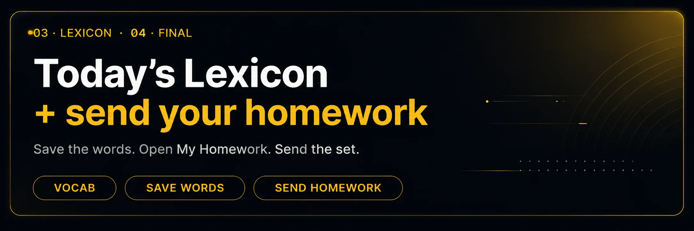
04 · final
Final — send your homework
Each mic-drill and debate has a "＋ to homework" button. Once you have your set, open My Homework and hit send.
04 · final send
Everything the teacher sees in one send
Your final set: three mic-drill recordings, your saved lexicon of the day, and one short reflection line. Small corrections are easier when your answers are saved — so send even if you don't feel 100%.
3 recordings — one per mic-drill
Saved lexicon — the ＋ chips you collected today
Final reflection — one sentence: which room was hardest and why